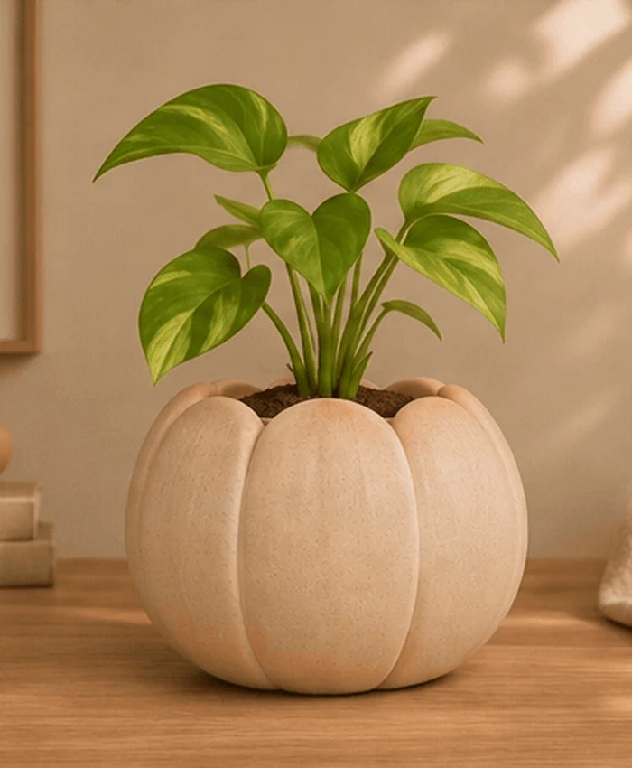
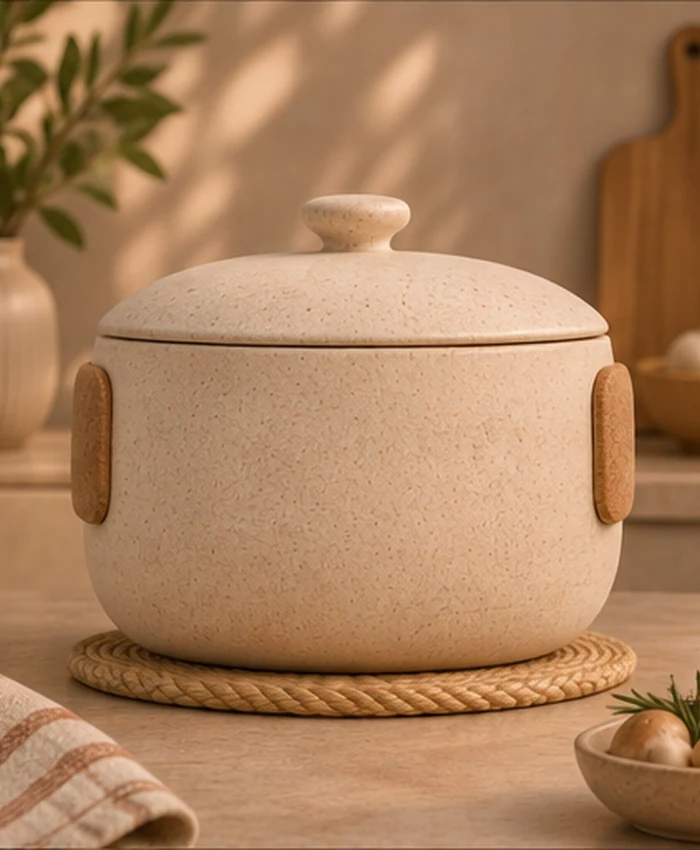
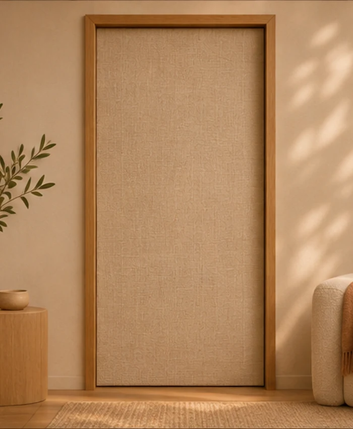
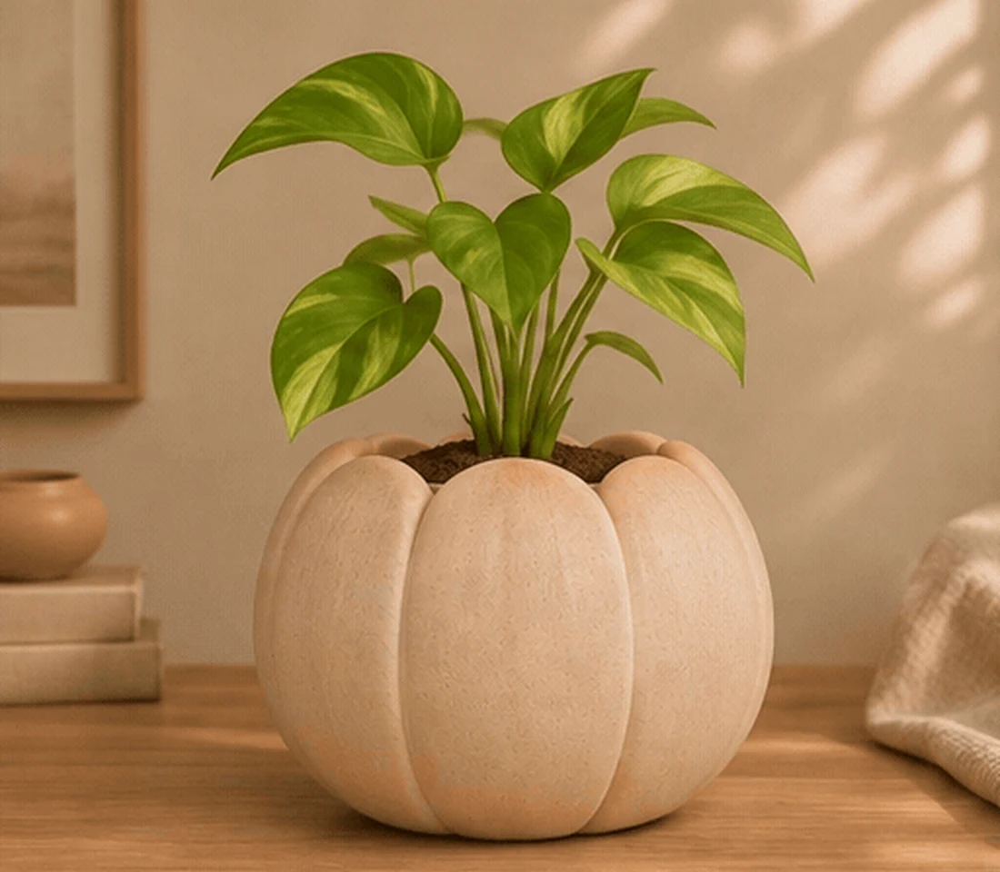

01 / SHAPE
Form is a gesture.
A back curves closer. A plant pot opens. A folded phone softens into a sphere. Movement can suggest an invitation, not a command.
MEIY / THE TRUTH BY DESIGN / 2032
Not through another screen. Through the form they take, the colour they carry, the texture beneath our hands, and the light they let into a room.



01 / THE PREMISE
A dirty cup invites washing. A crack asks us to consider repair, replacement, or whether it remains safe to use.
We already read objects through their condition, their weight, their shape, and how they feel to hold. The message is not in a notification. It emerges through our interpretation of a particular situation.
In the home imagined for 2032, objects learn to make selected changes deliberately: a chair swells into support; a lamp leans toward a book; a door shifts into a quiet household state.
These changes do not make objects human. They make their behaviour part of the interface.
02 / HOW OBJECTS COMMUNICATE
Rather than demanding attention, a surface, gesture or silhouette can let a person notice only what matters.
A back curves closer. A plant pot opens. A folded phone softens into a sphere. Movement can suggest an invitation, not a command.

Sage, clay and ochre communicate a change from across the room without another glowing screen.

A soft ridge emerges around a control. Raised dots on a grip make the object understandable under the hand.
A gentle glow marks activity. Sometimes the most considerate signal is no light at all.

03 / WHEN & WHERE
Today’s connected devices compete for attention. In this imagined future, computational behaviour becomes part of linen, timber, clay, stoneware and cork-like surfaces.
A stable everyday object can have a responsive layer. It might bend, expand, change colour, or develop tactile relief as part of the activity you are already doing.
The aim is not a more talkative home. It is a home that gives attention back.
CALM TECHNOLOGY / MATERIAL INTERACTION / 2032THE CRITICAL QUESTION
Support is welcome until it overrides the person it was meant to help. A chair could refuse to relax, a kettle could deny another drink, or a phone could roll away when a focus promise is broken.
The meaning of these gestures depends on who chooses, who can refuse, and who can interrupt.
04 / THE COLLECTION
Eight everyday objects. Each responds through its material, without asking for more of your attention. Companion Phone is the first object in the collection.
05 / SIGNALS FROM THE PRESENT
Influences and related research, not evidence that these speculative products have been fabricated.